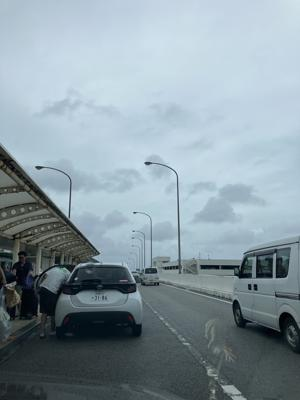
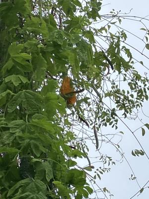

うるがいの話 ある日
最新: 工工四の校閲【うるがいの話 ある日】とは 一日だけのプログです
『うるがいの話』の最新一日だけのプログで、通信料が少なく経済的だ。カニの画像をクリックすると全ての日付が載る『うるがいの話』サイトを表示します
|
|
【うるがいの話】 うるがい(ｳﾙｶﾞｲ urugai)とは、『もずくがに』の名前でとても大きくなります。 |
|---|---|
|
|
【カミマヤーの話】 猫のことを方言でマヤーといいます。カミマヤー（kamimayaa）とは、神の猫のことです。 |
|
【たながぁの音楽】 たながぁ（ﾀﾅｶﾞｰ tanagaa）とは手長えびのことで、何種類かあり大きいのは車 エビぐらいになります。 |

|
【ぶながぁの話】 ぶながぁ(ﾌﾞﾅｶﾞｰ bunagaa)とは、赤い髪の毛、赤い身体、そして身長は１ｍ２０ｃｍ ぐらい、川の蟹を食べているの目撃された。場所は沖縄県国頭郡大宜味村のと ある村僕の隣近所に住んでいる爺さんから、聞いた話です。 |
|
|
【ギーマの話】 ギーマ(giima)とは、山原の里山に咲くスズランに似た、 花を付けます。実は食べられます、 気が付くと口の周りが紫になっています。 |
2024年07月27日 (土）工工四の校閲
15:42
 
校閲とは、文書や原稿などの誤りや不備な点を調べ、検討し、訂正したり校
正したりすること。
『ヒヤミカチ節』の動画を作成するため、図書館から工工四がある本を借り
た。ここ、数週間かけて楽譜ソフトに登録する。ん！、ん、ん、違う・・。
間違いが多々、それにしてももだ。印刷も手書きを反映させている程度のロ
ーカルな本なので仕方ないかと思うが。恐らく、校閲の作業は全く、行われ
ていないと思う。不遜ながら、校閲したものを動画に反映させることにする
。本日やっと、楽譜ソフトが完成、これから工工四の作成に入る。いやいや
暇人だ、かなりの工数をかけている。
２階の高さにあったゴヤーの実、台風で放置していたら完熟してしまった。
きのう、コドモから濡れた靴、２足を洗ってと頼まれる。ヨメが、自分でや
ればといいのにとブツブツ言いながら、洗濯機で洗う。靴は、洗濯機もスト
レスがあるようで、必ず洗濯物が偏っていますとエラーになる。洗濯機が壊
れてしまうと怒っていた。
１５時３０分 ビットコインの総資産 ￥３０、２８６（↑４２１）